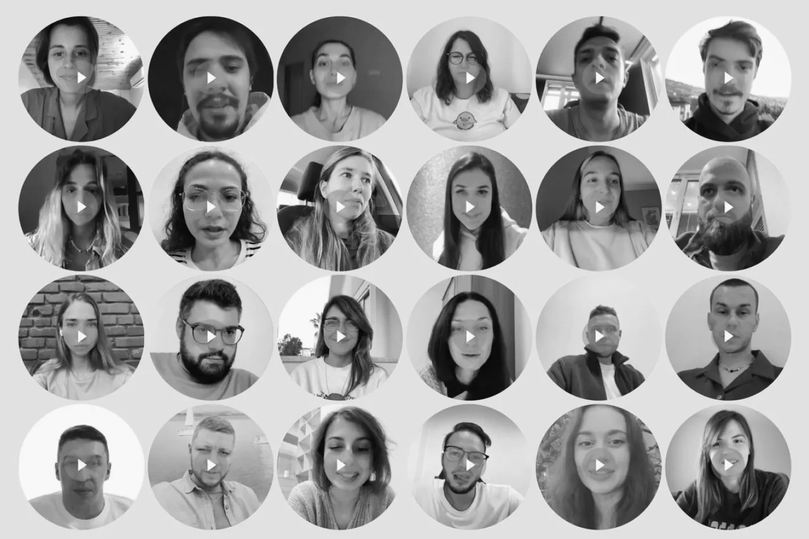
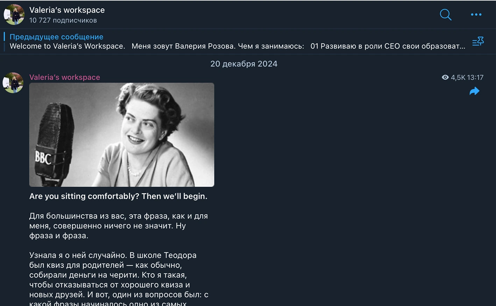

Valeria Rozova
Experience and Expertise
Role: CEO
EMEX — an international holding company with an annual GMV of $500+ million that includes Emex, Emex DWC, HWC, Smartbe, Kontrafakta. net.
My team of 700 people is responsible for developing commercial, information, fulfillment, and back-office businesses across 40 countries.
At Emex, I drive business transformation by restructuring teams and processes and integrating a product-oriented approach.
Management:
- I replaced 40 team members within a year;
- assembled a C-level team with 6 managers from scratch;
- established a product team of 10 product managers and 2 product designers;
- formed an analytics team with 10 analysts;
- built an HR team from the ground up, with 4 heads of department and 2 HR project managers.
Team:
- I develop annual strategies and set goals for both yearly and interim periods;
- launched financial reporting;
- designed and implemented management processes;
- introduced a talent management system with competency maps, grading structure, and development plans;
- implemented 360-degree performance evaluation.
Role: Co-Founder, CEO
WANNABE — an educational company that teaches how to design, launch, develop, and grow digital products.

Business Results:
- we achieved 2x year-over-year revenue
- growth with a 50% margin.
- over 40,000 users in the database and over 3,000 graduates.
Team:
- I hired a core team of 6 members;
- business growth rates significantly outpace team size growth.
Management:
- I develop annual strategies and set yearly and quarterly goals;
- oversee goal-tracking processes and personally lead all sync meetings;
- conduct one-on-ones and cultivate one of the strongest teams in the market.
Role: Founder, CEO.
TYPICAL — a platform for developing teams and leaders.
Business Results:
- Over 200 top executives, 500 managers, and several thousand employees have used the platform.
Management:
- I develop annual strategies and set yearly and quarterly goals;
- oversee goal-tracking processes and personally lead all sync meetings;
- design products and provide support for the most difficult cases.
QLEAN, BESTDOCTOR, DOC+, GETT, L’OREAL, IBM RESEARCH, European Space Agency.
Roles: CPO, Head of Customer Experience, Product Manager, Marketing Manager.
My experience ranges from large international companies to fast-growing tech startups. Everywhere I’ve built teams, set up their workflows, and delivered business results through research, hypothesis testing, and the creation of product and management processes. My portfolio includes dozens of mobile apps, websites, product lines, monetization models, and pricing strategies. Some of my achievements are delivering multifold revenue and profit growth, reaching break-even for a venture project, growing user bases, and reducing time-to-market. I have worked in multicultural teams, under shifting circumstances and with careful resource management.
Projects, Creativity, Teaching
I create content and share it with the community:

Coordinator of group and industry‑specific research and projects:
Organizer of the Pioneum Award: